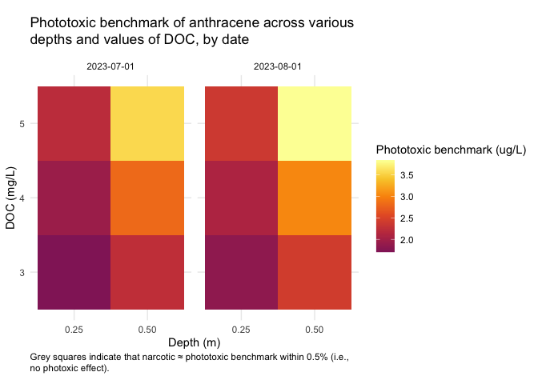
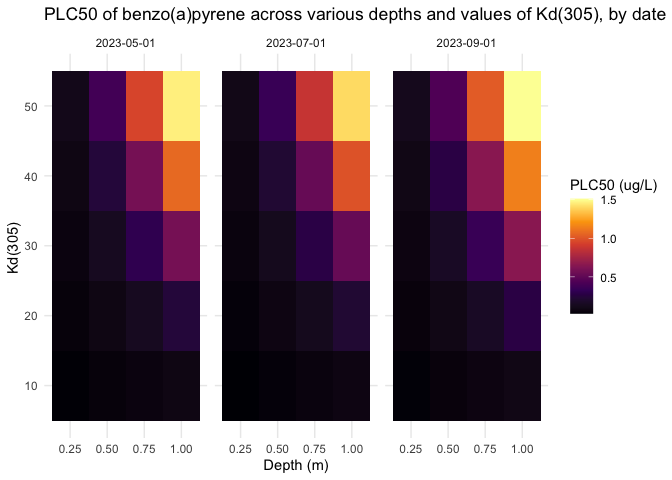

Overview
Implementation of the Photoxic Lipid Model (PTLM) for the calculation of Canadian Water Quality Guidelines for Polycyclic Aromatic Hydrocarbons (PAH).
This package uses the Tropospheric Ultraviolet and Visible (TUV) Radiation Model (https://github.com/NCAR/TUV) to calculate the light penetration through water of a given depth at a given location, with a specified Dissolved Organic Carbon concentration. The light exposure is then used (along with the PAH-specific molar absorption across a range of wavelengths), to calculate the light absorption (Pabs) of the given PAH at that location. This is then used to determine the phototoxic benchmark.
Installation
Windows
On Windows, you need to install Rtools. Make sure that you install the appropriate version for your version of R (i.e. Rtools 4.0 for R 4.0.x, Rtools 4.3 for R 4.3.x, etc.). This will install a compiler toolchain on your computer (specifically gfortran) which is necessary to compile the Fortran code for the TUV model.
Mac
On a Mac, the easiest way to get started is to use Homebrew, and install gcc, which includes gfortran:
Install pahwq
Once you have Rtools (Windows) or gcc (Mac), you can install the package with:
# install.packages("pak")
pak::pak("bcgov/pahwq")Note: You may get some warnings when you install the package - these are from the Fortran compiler because the Fortran code is quite old and does not fully conform to modern standards. These warnings do not affect the package functionality or accuracy.
Example usage
To calculate the acute phototoxic water quality guideline (benchmark) for Anthracene at 0.25 m depth in Okanagan Lake on June 21, 2023, with a measured DOC of 5 g/m^3, you can use the following code:
- Load the pahwq package:
- Run the TUV model at your location to determine the incident light intensity across the wavelength spectrum, at each time stamp within the time window specified:
irrad <- tuv(
depth_m = 0.25,
lat = 49.601632,
lon = -119.605862,
DOC = 5,
date = "2023-06-21",
tzone = -8L
)
head(irrad)
#> wl wavelength_start wavelength_end Kd_lambda t_00.00.00 t_01.00.00
#> 1 280 279.5 280.5 16.7 0 0
#> 2 281 280.5 281.5 16.4 0 0
#> 3 282 281.5 282.5 16.1 0 0
#> 4 283 282.5 283.5 15.9 0 0
#> 5 284 283.5 284.5 15.6 0 0
#> 6 285 284.5 285.5 15.3 0 0
#> t_02.00.00 t_03.00.00 t_04.00.00 t_05.00.00 t_06.00.00 t_07.00.00 t_08.00.00
#> 1 0 0 1.93e-36 6.12e-36 1.16e-35 2.71e-35 5.35e-32
#> 2 0 0 1.83e-33 5.79e-33 1.10e-32 2.63e-32 3.85e-29
#> 3 0 0 1.99e-30 6.28e-30 1.21e-29 2.96e-29 3.15e-26
#> 4 0 0 9.12e-29 2.88e-28 5.56e-28 1.39e-27 1.23e-24
#> 5 0 0 1.02e-26 3.22e-26 6.28e-26 1.61e-25 1.10e-22
#> 6 0 0 7.62e-25 2.40e-24 4.74e-24 1.26e-23 6.50e-21
#> t_09.00.00 t_10.00.00 t_11.00.00 t_12.00.00 t_13.00.00 t_14.00.00 t_15.00.00
#> 1 2.39e-27 1.32e-24 3.76e-23 1.08e-22 3.83e-23 1.37e-24 2.56e-27
#> 2 6.55e-25 2.07e-22 4.39e-21 1.15e-20 4.47e-21 2.14e-22 6.98e-25
#> 3 1.99e-22 3.56e-20 5.61e-19 1.34e-18 5.69e-19 3.68e-20 2.11e-22
#> 4 4.44e-21 5.71e-19 7.58e-18 1.72e-17 7.69e-18 5.89e-19 4.68e-21
#> 5 1.88e-19 1.57e-17 1.66e-16 3.49e-16 1.68e-16 1.61e-17 1.97e-19
#> 6 5.12e-18 2.72e-16 2.28e-15 4.46e-15 2.30e-15 2.79e-16 5.34e-18
#> t_16.00.00 t_17.00.00 t_18.00.00 t_19.00.00 t_20.00.00 t_21.00.00 t_22.00.00
#> 1 6.01e-32 2.74e-35 1.16e-35 6.16e-36 1.96e-36 0 0
#> 2 4.28e-29 2.66e-32 1.11e-32 5.83e-33 1.86e-33 0 0
#> 3 3.45e-26 2.99e-29 1.21e-29 6.32e-30 2.02e-30 0 0
#> 4 1.34e-24 1.41e-27 5.60e-28 2.90e-28 9.29e-29 0 0
#> 5 1.19e-22 1.63e-25 6.31e-26 3.24e-26 1.04e-26 0 0
#> 6 6.98e-21 1.28e-23 4.77e-24 2.42e-24 7.76e-25 0 0
#> t_23.00.00
#> 1 0
#> 2 0
#> 3 0
#> 4 0
#> 5 0
#> 6 0- Calculate the value of Pabs for the PAH of interest, using the results of the TUV model run:
(Pabs <- p_abs(irrad, "Anthracene"))
#> [1] 1142.155- Finally, calculate phototoxic benchmark in 𝝁g/L, supplying the $`P_{abs}`$ value.
phototoxic_benchmark(Pabs, pah = "Anthracene")
#> [1] 2.145783We can compare the phototoxic benchmark to the narcotic benchmark to see the effect of the photoxicity of the PAH:
narcotic_benchmark("Anthracene")
#> [1] 64.12872Options
pahwq creates a directory on your computer to store the TUV model input and output files. By default, the location of this is set automatically to a standard location (determined by tools::R_user_dir). You can change the location of this directory by setting the pahwq.tuv_data_dir option:
options("pahwq.tuv_data_dir" = "path/to/my/tuv/data")Running the TUV model step-by-step
Step 2 above can be broken down if you desire to inspect each phase of running the TUV model:
- Set the options for the TUV model run:
set_tuv_aq_params(
depth_m = 0.25,
lat = 49.601632,
lon = -119.605862,
DOC = 5,
date = "2023-06-21",
tzone = -8L
)- Run the TUV model
run_tuv()- Get the results of the TUV model run, as a data.frame of incident irradiation at each timestamp and wavelength, at the given water depth at your location:
irrad <- get_tuv_results(file = "out_irrad_y")
head(irrad)
#> wl wavelength_start wavelength_end Kd_lambda t_00.00.00 t_01.00.00
#> 1 280 279.5 280.5 16.7 0 0
#> 2 281 280.5 281.5 16.4 0 0
#> 3 282 281.5 282.5 16.1 0 0
#> 4 283 282.5 283.5 15.9 0 0
#> 5 284 283.5 284.5 15.6 0 0
#> 6 285 284.5 285.5 15.3 0 0
#> t_02.00.00 t_03.00.00 t_04.00.00 t_05.00.00 t_06.00.00 t_07.00.00 t_08.00.00
#> 1 0 0 1.93e-36 6.12e-36 1.16e-35 2.71e-35 5.35e-32
#> 2 0 0 1.83e-33 5.79e-33 1.10e-32 2.63e-32 3.85e-29
#> 3 0 0 1.99e-30 6.28e-30 1.21e-29 2.96e-29 3.15e-26
#> 4 0 0 9.12e-29 2.88e-28 5.56e-28 1.39e-27 1.23e-24
#> 5 0 0 1.02e-26 3.22e-26 6.28e-26 1.61e-25 1.10e-22
#> 6 0 0 7.62e-25 2.40e-24 4.74e-24 1.26e-23 6.50e-21
#> t_09.00.00 t_10.00.00 t_11.00.00 t_12.00.00 t_13.00.00 t_14.00.00 t_15.00.00
#> 1 2.39e-27 1.32e-24 3.76e-23 1.08e-22 3.83e-23 1.37e-24 2.56e-27
#> 2 6.55e-25 2.07e-22 4.39e-21 1.15e-20 4.47e-21 2.14e-22 6.98e-25
#> 3 1.99e-22 3.56e-20 5.61e-19 1.34e-18 5.69e-19 3.68e-20 2.11e-22
#> 4 4.44e-21 5.71e-19 7.58e-18 1.72e-17 7.69e-18 5.89e-19 4.68e-21
#> 5 1.88e-19 1.57e-17 1.66e-16 3.49e-16 1.68e-16 1.61e-17 1.97e-19
#> 6 5.12e-18 2.72e-16 2.28e-15 4.46e-15 2.30e-15 2.79e-16 5.34e-18
#> t_16.00.00 t_17.00.00 t_18.00.00 t_19.00.00 t_20.00.00 t_21.00.00 t_22.00.00
#> 1 6.01e-32 2.74e-35 1.16e-35 6.16e-36 1.96e-36 0 0
#> 2 4.28e-29 2.66e-32 1.11e-32 5.83e-33 1.86e-33 0 0
#> 3 3.45e-26 2.99e-29 1.21e-29 6.32e-30 2.02e-30 0 0
#> 4 1.34e-24 1.41e-27 5.60e-28 2.90e-28 9.29e-29 0 0
#> 5 1.19e-22 1.63e-25 6.31e-26 3.24e-26 1.04e-26 0 0
#> 6 6.98e-21 1.28e-23 4.77e-24 2.42e-24 7.76e-25 0 0
#> t_23.00.00
#> 1 0
#> 2 0
#> 3 0
#> 4 0
#> 5 0
#> 6 0Calculating photoxicity for multiple chemicals
If you want to calculate a phototoxic benchmark for several chemicals at a particular site, you can use the pb_multi() function.
First, you must calculate the absorption with tuv():
irrad <- tuv(
depth_m = 0.25,
lat = 49.601632,
lon = -119.605862,
DOC = 5,
date = "2023-06-21",
tzone = -8L,
quiet = TRUE
)Then, use the results from the TUV model run and a vector of chemical names:
Sensitivity to Kd, depth, and time of year
Use the function sens_kd_depth() to investigate the sensitivity of a given PAH at a location to light attenuation (DOC or Kd) and depth over a set of dates.
There is also a plotting function, plot_sens_kd_depth() to make a static or interactive heat map of the analysis.
# varying DOC
out <- sens_kd_depth(
"Anthracene",
lat = 52,
lon = -113,
DOC = 3:5,
depth_m = c(0.25, 0.5),
date = c("2023-07-01", "2023-08-01")
)
head(out)
#> # A tibble: 6 × 11
#> lat lon elev_m depth_m date DOC tuv_res pah
#> <dbl> <dbl> <dbl> <dbl> <date> <int> <list> <chr>
#> 1 52 -113 880 0.25 2023-07-01 3 <tv_rslts [421 × 28]> anthracene
#> 2 52 -113 880 0.5 2023-07-01 3 <tv_rslts [421 × 28]> anthracene
#> 3 52 -113 880 0.25 2023-08-01 3 <tv_rslts [421 × 28]> anthracene
#> 4 52 -113 880 0.5 2023-08-01 3 <tv_rslts [421 × 28]> anthracene
#> 5 52 -113 880 0.25 2023-07-01 4 <tv_rslts [421 × 28]> anthracene
#> 6 52 -113 880 0.5 2023-07-01 4 <tv_rslts [421 × 28]> anthracene
#> # ℹ 3 more variables: narcotic_benchmark <dbl>, pabs <dbl>,
#> # phototoxic_benchmark <dbl>
plot_sens_kd_depth(out, interactive = FALSE)
# Varying Kd_ref
out2 <- sens_kd_depth(
"benzo(a)pyrene",
lat = 57,
lon = -120,
Kd_ref = seq(10, 50, by = 10),
depth_m = c(0.25, 0.5, 0.75, 1),
date = c("2023-05-01", "2023-07-01", "2023-09-01")
)
plot_sens_kd_depth(out2, interactive = FALSE)
Calculating Pabs and phototoxic benchmarks with experimental data
If you have experimentally obtained data with a measured irradiance across a range of wavelengths, you can calculate Pabs using p_abs_single() on a 2-column data.frame. The first column must contain wavelengths and be called wl, and the second column contains irradiance values. Irradiance values must be in units of "uW / cm^2 / nm" (default) or "W / m^2 / nm".
irrad_df <- read.csv("my-irrad-data.csv")
head(irrad_df)
#> wl i
#> 1 280 0.05500000
#> 2 281 0.05000000
#> 3 282 0.04666667
#> 4 283 0.04000000
#> 5 284 0.06000000
#> 6 285 0.05500000
p_abs_single(irrad_df, pah = "anthracene")
#> [1] 0.027156To simulate this exposure for a period of time (say 16 hours of daylight over a two-day period), use the time_multiplier argument to get the Pabs for the full exposure time. E.g., if the exposure was one second, and you need a 16h exposure, the multiplier would be 3600 s in 1h * 16 h (= 57600).
p_abs_single(irrad_df, pah = "anthracene", time_multiplier = 3600 * 16)
#> [1] 1564.17You can then use this value to calculate phototoxic benchmark with the phototoxic_benchmark() function. You can either supply a narcotic benchmark value directly, or allow the function to calculate the narcotic benchmark for the chemical supplied:
# Calculate the Pabs for the simulated exposure:
p_abs_exp <- p_abs_single(irrad_df, pah = "anthracene", time_multiplier = 3600 * 16)
# Calculate the phototoxic benchmark:
phototoxic_benchmark(p_abs_exp, narc_bench = 58.4)
#> [1] 1.272051Sensitivity analysis
An analysis was conducted to test the sensitivity to various parameters in the TUV model. The analysis can be viewed at: https://bcgov.github.io/pahwq/articles/sensitivity.html.
Getting Help or Reporting an Issue
To report bugs/issues/feature requests, please file an issue.
How to Contribute
If you would like to contribute to the package, please see our CONTRIBUTING guidelines.
Please note that this project is released with a Contributor Code of Conduct. By participating in this project you agree to abide by its terms.
License
Copyright 2023 Province of British Columbia
Licensed under the Apache License, Version 2.0 (the "License");
you may not use this file except in compliance with the License.
You may obtain a copy of the License at
http://www.apache.org/licenses/LICENSE-2.0
Unless required by applicable law or agreed to in writing, software distributed under the License is distributed on an "AS IS" BASIS,
WITHOUT WARRANTIES OR CONDITIONS OF ANY KIND, either express or implied.
See the License for the specific language governing permissions and limitations under the License.